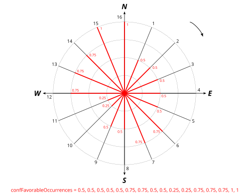

Atmospheric Template
Generate default atmospheric settings from the PERIOD field of a noise emission table
Overview
➡️ Generate default atmospherics settings from the PERIOD field of a noise emission table. It is used to export the result table to be edited and reimported to be used into Noise_level_from_source. This table make you able to change the temperature and other settings for each time period of the simulation
Arguments
Optional inputs
confDutchFraction— Dutch favourable fractionUse the Dutch formulas on calculating the ratio for favourable/homogenous propagation
Type:
BooleanconfFavourableOccurrencesDefault— Default favourable occurrencesComma-delimited string containing the probability ([0,1]) of occurrences of favourable propagation conditions. Follow the clockwise direction. The north slice is the last array index (n°16 in the schema below) not the first one.

. For Netherlands check confDutchFraction instead of using this parameter.
Type:
StringconfHumidity— Relative humidity🌧 Humidity for noise propagation (%) [0,100]
Type:
DoubleDefault:
70confTemperature— Air temperature🌡 Air temperature (°C)
Type:
DoubleDefault:
15tablePeriodAtmosphericSettings— Output table nameName of the Atmospheric settings table The table will contain the following columns:
PERIOD : time period (VARCHAR PRIMARY KEY)
WINDROSE : Comma-delimited string containing the probability ([0,1]) of occurrences of favourable propagation conditions. Follow the clockwise direction. The north slice is the last array index (n°16 in the schema below) not the first one.
or DutchD, DutchE, DutchN for Netherlands
TEMPERATURE : Temperature in celsius (FLOAT)
PRESSURE : air pressure in pascal (FLOAT)
HUMIDITY : air humidity in percentage (FLOAT)
GDISC : choose between accept G discontinuity or not (BOOLEAN) default true
PRIME2520 : choose to use prime values to compute eq. 2.5.20 (BOOLEAN) default false
Type:
StringDefault:
SOURCES_ATMOSPHERICtableSourcesEmission— Sources emission table nameName of the Sources table (ex. SOURCES_EMISSION) The table must contain:
IDSOURCE * : an identifier. It shall be linked to the primary key of tableRoads (INTEGER)
PERIOD * : Time period, you will find this column on the output (VARCHAR)
Type:
String
Output
result— Result output stringThis type of result does not allow the blocks to be linked together.
Type:
String